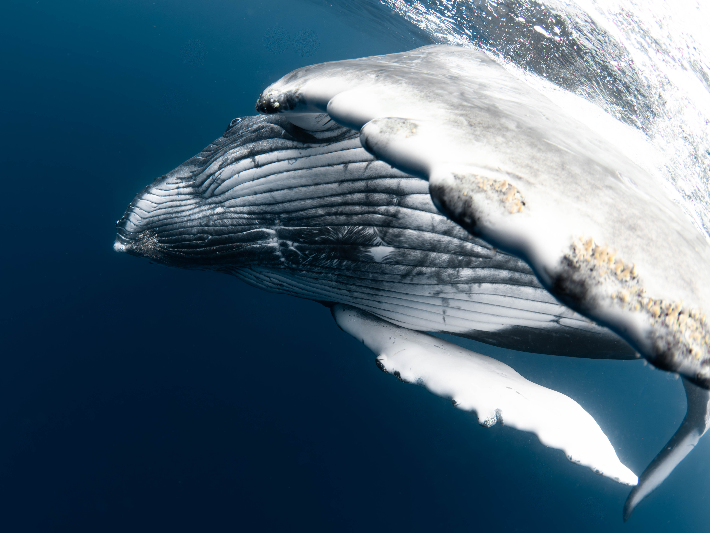
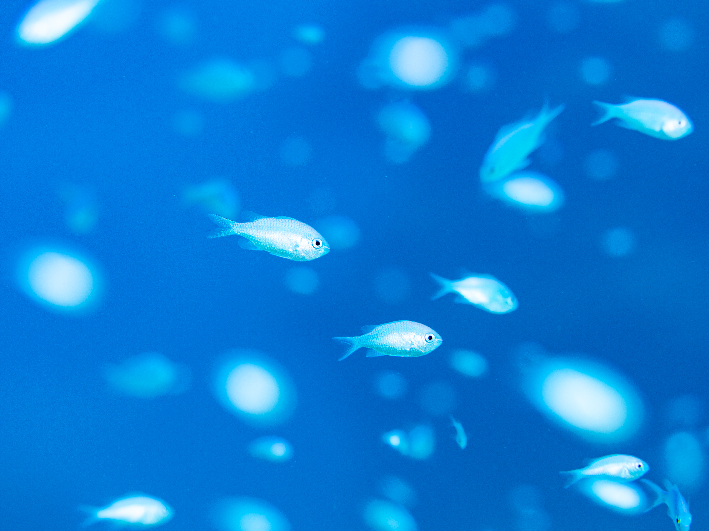

PROFILE
大阪出身 | 沖縄在住
大学時代にダイビングと出会い、水中世界を撮り始める。
和歌山・串本の海で4年間学び、卒業後はより広く
そして深く海を知るため、沖縄へと拠点を移す。
現在は沖縄の海をフィールドに、生き物たちが魅せる
一瞬の表情や、心に響く光景を求めて、各地の海へ
足を運びシャッターを切り続けている。
Born in Osaka, now based in Okinawa.
Started underwater photography during my university years.
After four years in Kushimoto, Wakayama, I moved to Okinawa
to explore the ocean more broadly and deeply.
Now based in Okinawa,I travel across the country
to capture the raw emotions of marine life
and unforgettable ocean landscapes.
GEAR
- Camera: OLYMPUS OMD EM-1 MarkⅡ
- Lens: m.zuiko 8mm f1.8 fisheye pro
- Lens: m.zuiko 60mm f2.8 macro
- Housing: OM SYSTEM PT-EP14
- Strobe: Inon Z330
CAREER
Dive Family Yellow 主催の写真展に出展
Showed works at a photo exhibition hosted by Dive Family Yellow
Web記事「静岡県伊東の海を“愛おしく”想い〜」鍵井靖章氏 主催の写真展「Blue+」に出展
Showed works at a photo exhibition hosted by Yasuaki Kagii
Web記事「写真展「Blue+ -海を旅する夢-」〜」IPA 2026 HONORABLE MENTION Nature/Underwater
作品「Ocean's Orchestra」





CONTACT
問い合わせは下記連絡先から受け付けております。
For requests, please contact us using the information below.
- Name: 坪田和眞 KAZUMA TSUBOTA
- Mail: t070xkazu14257@gmail.com
- Instagram: _kazu.uwpic_